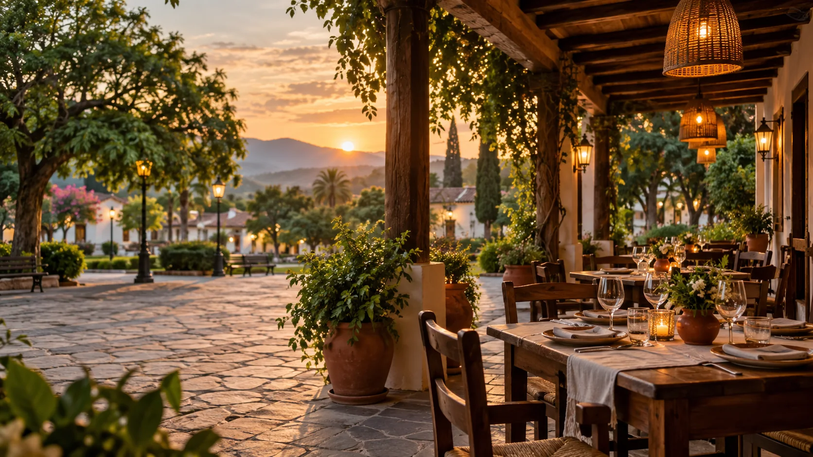

Carta desde la mesaEscaneá, elegí y revisá antes de pedir.

San Pedro de Colalao · propuesta demostrativa
Una tradición en San Pedro de Colalao
Sabores conocidos, tiempo para compartir y una atención más simple desde que llegás hasta que pedís la cuenta.
Abierto hoyDesayuno · almuerzo · merienda · cena
Atención cuando la necesitásPedí ayuda sin perder el encuentro.
Cuenta claraPaguen juntos o cada uno lo suyo.
El clima también abre el apetito · demo
¿Qué combina con este momento?
Recomendaciones ilustrativas que un bar puede adaptar según la temperatura, la hora y su carta disponible.

Imágenes creadas para esta demostración. No representan platos de un comercio real.
Sabores de acá
Recetas que acompañan el paseo, la charla y la vuelta a casa.
Una propuesta inspirada en la mesa norteña: empanadas, humita, pastas, meriendas y platos para compartir. Cada establecimiento puede contar su propia historia sin perder la sencillez de la experiencia.
- Maíz
- Nuez
- Cayote
- Quesillo
Todo el día
Siempre hay un momento para encontrarse.
La experiencia cambia con la hora, pero la mesa sigue siendo el centro.
Mañana
Desayuno tranquilo
Café, pan casero y algo rico antes de empezar el paseo.
Mediodía
Sabores regionales
Platos abundantes para compartir en familia o con amigos.
Tarde
Merienda en la villa
Una pausa dulce cuando baja el sol y vuelve el movimiento.
Noche
Cena y encuentro
Luces cálidas, sobremesa y tiempo para quedarse un rato más.
La mesa primero
La tecnología acompaña. El encuentro sigue siendo humano.
Elegir sin apuro
Fotos, ingredientes y categorías claras para decidir mejor.
Pedir atención
El mozo recibe el aviso y vuelve a la mesa cuando hace falta.
Compartir la cuenta
Cada persona puede pedir lo suyo y decidir cómo pagar al final.
Agenda demostrativa
Comidas, música y momentos que vuelven.
Noche de verano
Música en vivo
Propuesta ilustrativa · confirmar con el establecimiento.
Sabores de la villa
Menú regional
Propuesta ilustrativa · cupos y menú a definir.
Visitanos
Tu próxima mesa puede estar en San Pedro.
La ubicación, los horarios y los medios de contacto se personalizan cuando el establecimiento se suma.
- Ubicación
- San Pedro de Colalao, Tucumán
- Horario de muestra
- Todos los días · 08:00 a 00:00
- Contacto
- Se configura para cada bar